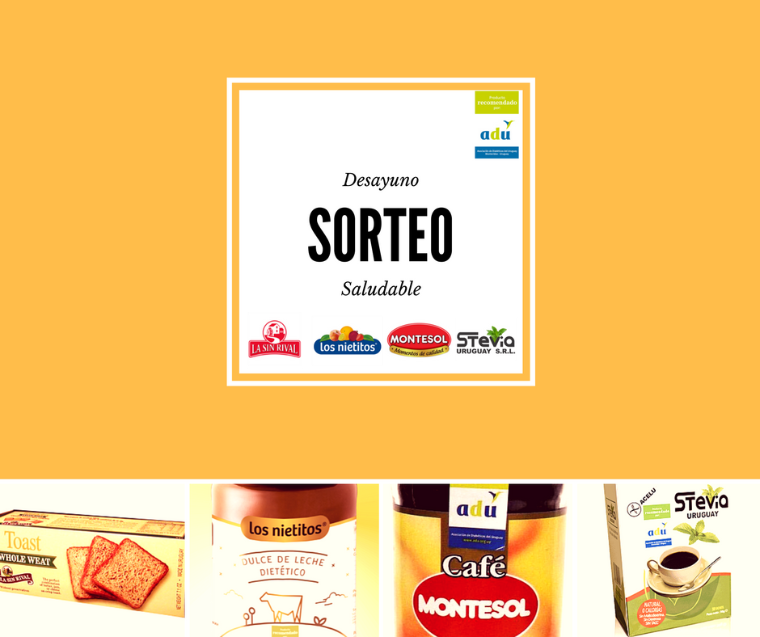
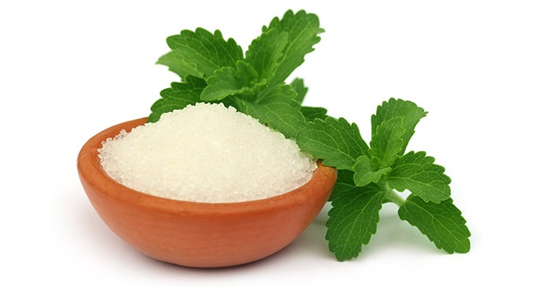
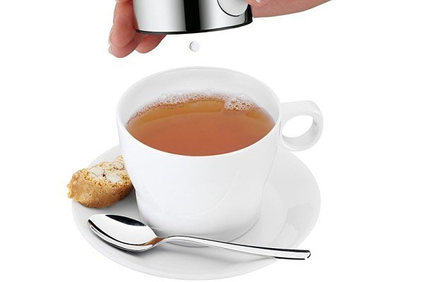
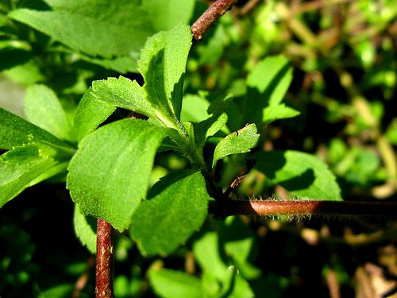
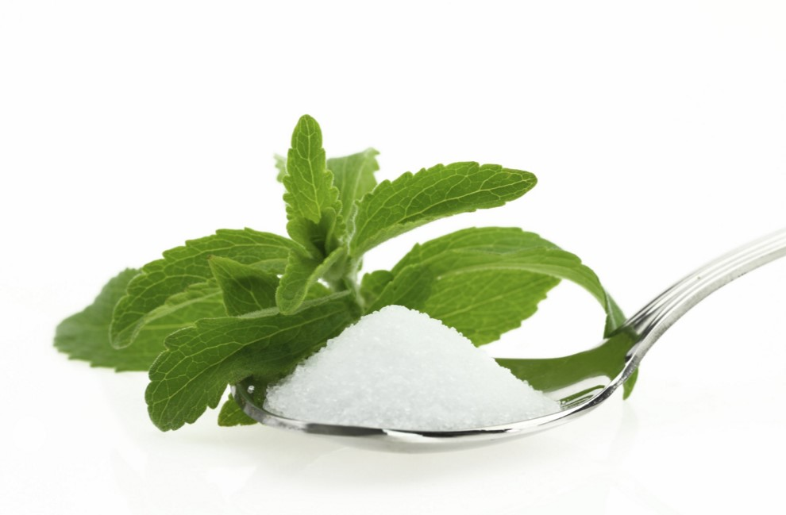
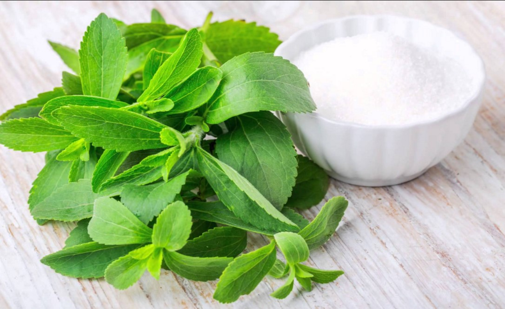

¿Cómo se forma un Edulcorante?
Todos los edulcorantes contienen una sustancia química, que es utilizada como vehículo para que puedan ser consumidos de forma práctica y por lo general, esta sustancia constituye el 90% del producto, de ahí la relevancia de conocer qué aporta cada uno de ellos y cuántas calorías representan en el compuesto.

Uruguay tiene el gusto de comunicarles nuevamente que vamos a participar del sorteo DESAYUNO SALUDABLES organizado por la Asociación de Diabéticos del Uruguay (ADU). El mismo tendrá lugar el 15 de agosto a las 15 horas, a través del Facebook de la ADU con todas aquellas personas que brinden un ME GUSTA en el referido sorteo y comenten cuál de todos los productos es el que más le gusta.

MERCADO DE ALIMENTOS Y BEBIDAS
El edulcorante de Stevia es resistente al calor (hasta 200º C), es estable al ácido, incoloro y no fermenta. (Glycemic Research Institute, 2000; Midmore and Rank, 2002).
Refuerza sabores y olores (Ikan, et al., 1993; Mowrey, 1992).
No tiene calorías y es natural (Johnson, 1990)
Es un edulcorante no-tóxico y no-adictivo (Alvarez, 1986; Kirkland, 2000)
Es potente, 250 a 300 veces más dulce que el azúcar en su forma procesada (Glycemic Research institute, 2000)
Es un edulcorante de mesa para el té, café, etc. (Midmore & Rank, 2002);
Una fuente de antioxidantes
Enaltecedor de bebidas alcohólicas (agente de envejecimiento y catalizador)
Productos potenciales: Aditivo para las bebidas gaseosas, jarabes de fruta, refrescos, jugos de fruta, helados, yogures, sorbetes, pasteles, bizcochos, tortas, panes dulces, tartas, panificados, mermeladas,
salsas, curtidos, jaleas, postres, chicles, dulces, confiterías, frutos de mar, verduras, dietas para bajar de peso, dietas diabéticas, enaltecedor del sabor, color y olor.

Edulcorantes Artificiales y los riesgos de su consumo
Los edulcorantes artificiales, inventados para reducir el consumo de azúcar y llevar una vida más sana, podrían en realidad aumentar el riesgo a padecer diabetes, según un informe publicado en setiembre de 2015 por el Instituto de Ciencias Weizmann de Israel. Presentes en bebidas gaseosas, cereales y postres, los edulcorantes artificiales representan un enorme mercado alimenticio y son muy apreciados por las personas a dieta o que tienen problemas con el azúcar.

La stevia, a las puertas de su uso como edulcorante
La estevia, una planta de la misma familia que el girasol y la achicoria, es un cultivo original de América del Sur, en particular, de Brasil y Paraguay. Los pobladores indígenas conocedores del intenso dulzor del extracto que se obtiene de las hojas de la planta, a la que llaman hoja de miel, la usan para endulzar comidas, infusiones y bebidas como el mate. El interés que ha mostrado la industria alimentaria y farmacéutica por la estevia se basa, además de en su poder edulcorante y sin calorías, en las potenciales propiedades saludables en el control de la glucemia y la hipertensión arterial. Así consta en los estudios preliminares realizados sobre los principios activos de la planta, los glucósidos de esteviol, si bien el número de investigaciones en humanos es todavía escaso como para dar los resultados por concluyentes.

Beneficios de la Stevia
Las personas que consumen habitualmente la stevia para endulzar sus infusiones (té, café, roobios, manzanilla, etc.) o sus alimentos en general, como sustituto del azúcar y los edulcorantes artificiales, ya que la stevia aporta cero calorías a nuestra dieta, y es el único endulzante natural totalmente seguro para un consumo habitual y de por vida cuando el azúcar está contraindicado, como es el caso de los diabéticos y de las personas que siguen una dieta de adelgazamiento prolongada.

Como consumir la stevia
En otra parte de esta página web describiremos los indudables beneficios que esta planta puede aportar a la ganadería y a la agricultura, pero consideramos más urgente informar aquí de las ventajas que la stevia puede proporcionar al consumo humano.
Entre los consumidores de stevia podemos establecer dos grandes grupos:
¿Qué es Stevia?
¿Qué es Stevia? (o estevia) es una planta de la cual se obtiene varios beneficios que van desde los beneficios de los extractos crudos (hoja de plantas criollas) también endulzantes en presentación liquida o solida de color oscuro que al ser procesados en un laboratorio podemos obtener un poderoso edulcorante y sustituto del azúcar obtenido a partir de las hojas de la especie de planta Stevia rebaudiana. El gusto de stevia tiene un comienzo lento y una duración más larga que la del azúcar, y algunos de sus extractos pueden tener un retrogusto amargo o a regaliz en altas concentraciones.
RESALTAMOS ALGUNAS PROPIEDADES DEL STEVIA
MERCADO DE ALIMENTOS Y BEBIDAS
El edulcorante de Stevia es resistente al calor (hasta 200º C), es estable al ácido, incoloro y no fermenta. (Glycemic Research Institute, 2000; Midmore and Rank, 2002).
Refuerza sabores y olores (Ikan, et al., 1993; Mowrey, 1992).
No tiene calorías y es natural (Johnson, 1990)
Es un edulcorante no-tóxico y no-adictivo (Alvarez, 1986; Kirkland, 2000)
Es potente, 250 a 300 veces más dulce que el azúcar en su forma procesada (Glycemic Research institute, 2000)
Es un edulcorante de mesa para el té, café, etc. (Midmore & Rank, 2002);
Una fuente de antioxidantes
Enaltecedor de bebidas alcohólicas (agente de envejecimiento y catalizador)
Productos potenciales: Aditivo para las bebidas gaseosas, jarabes de fruta, refrescos, jugos de fruta, helados, yogures, sorbetes, pasteles, bizcochos, tortas, panes dulces, tartas, panificados, mermeladas,
salsas, curtidos, jaleas, postres, chicles, dulces, confiterías, frutos de mar, verduras, dietas para bajar de peso, dietas diabéticas, enaltecedor del sabor, color y olor.
EL MERCADO DE SALUD
Acción hipo-glicémica
Tratamiento contra la diabetes
Acción cardiovascular
Acción antimicrobiana
Acción tónica digestiva
Previene las caries y retarda la placa
Controla el eczema y el acné, agente curativo rápido para el cuidado de la piel
Cero calorías
Para el tratamiento de la hipertensión y el control de la presión arterial
Antagonista del calcio
Agente bactericida
Productos potenciales: enjuague bucal, programas de pérdida de peso, pasta dentífrica, agentes de cuidado de piel, tratamientos médicos